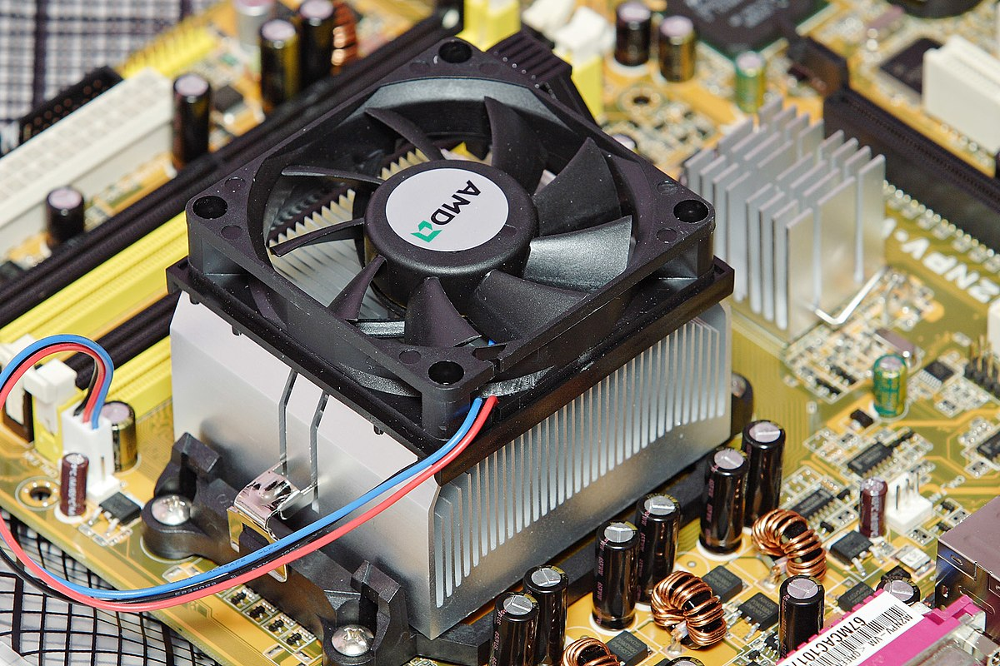

DISSIPATORE AD ARIA

I materiali utilizzati sono il rame e l'alluminio; il primo viene impiegato nei casi dove occorra la massima efficienza nel trasferimento termico, accettandone il maggior costo e il maggior peso specifico, l'alluminio viene scelto per condizioni operative meno impegnative. Nel caso di dissipatori per microprocessori, solitamente è configurato a lamelle per aumentare l'efficienza nella sottrazione di calore (aumento rapporto superficie/volume), e ulteriormente accoppiato con una ventola di raffreddamento mossa da un piccolo motore elettrico (collegato direttamente alla scheda madre) che fornisce un flusso di aria di ventilazione. Ne esistono di molte altre forme, conformate in funzione dei componenti a cui devono essere applicati, in alcuni casi, prevalentemente apparecchiature voluminose sviluppanti molto calore, costituiscono parte portante del telaio stesso. Il principio sfruttato è sempre quello di aumentare la superficie radiante per favorire la dispersione del calore per irraggiamento e convezione. Quando necessita efficienza estrema e minimo ingombro, si adotta la soluzione definita "ventilazione forzata", come nel caso delle CPU o della strumentazione elettronica. Particolare attenzione va rivolta all'accoppiamento meccanico tra il dispositivo generante calore e il dissipatore, per ottenere la massima efficienza, viene interposto tra le due superfici a contatto, una pasta termoconduttiva, avente funzione di eliminare completamente il velo di aria inevitabilmente presente, essendo la stessa un pessimo conduttore termico, ne limiterebbe l'efficienza.